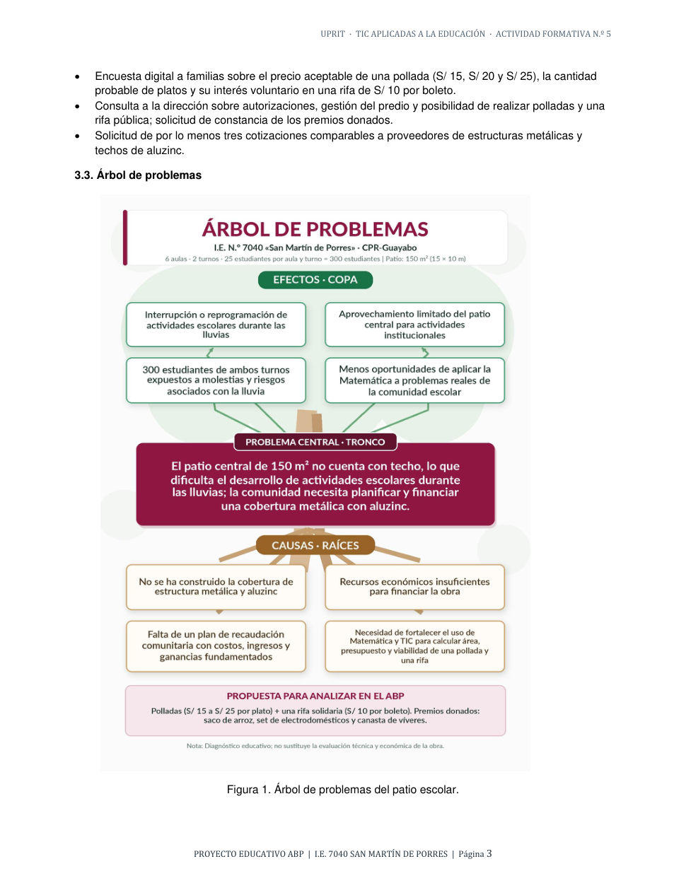
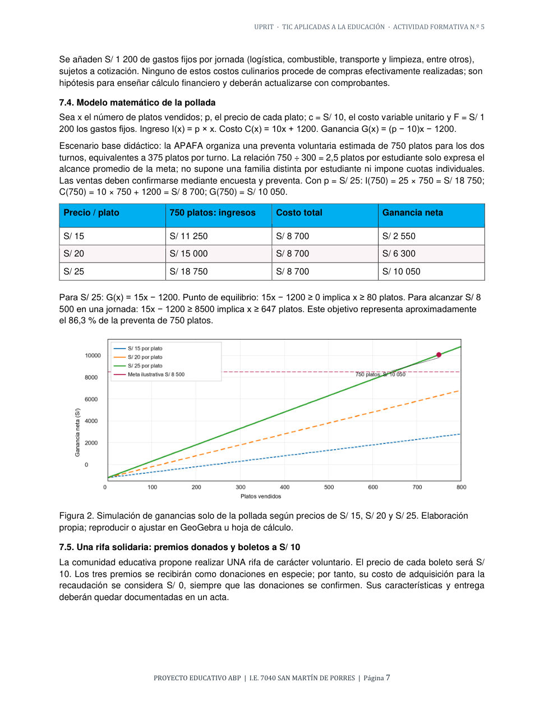
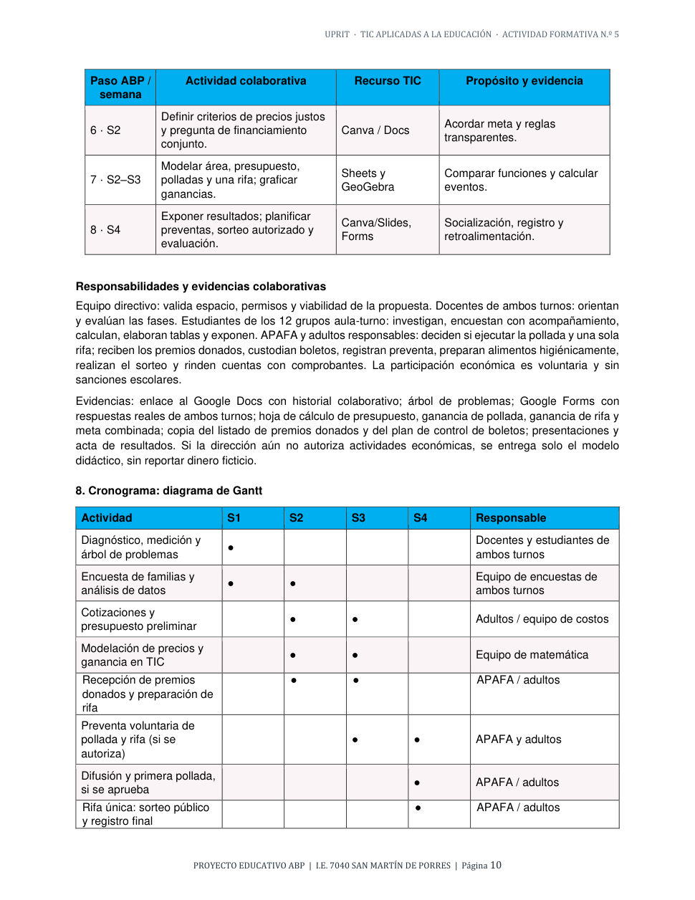

Situación problemática
La I.E. N.º 7040 «San Martín de Porres» del CPR Guayabo, Pachacámac, plantea estudiar la cobertura metálica con aluzinc de un patio central de 150 m² utilizado por seis aulas en dos turnos. La propuesta vincula el cálculo del área, los presupuestos y las actividades voluntarias de financiamiento con el aprendizaje matemático.

Datos y presupuestos del modelo
| Concepto | Valor del ejercicio | Aclaración |
|---|---|---|
| Proyección horizontal del patio | 150 m² | 15 × 10 m son dimensiones ilustrativas pendientes de verificación. |
| Aluzinc para compra estimada | 165 m² | 10 % adicional por inclinación, traslapes y desperdicio. |
| Subtotal de obra y servicios | S/ 36 180 | Presupuesto didáctico, no cotización definitiva. |
| Imprevistos | S/ 3 618 | 10 % del subtotal. |
| Meta financiera preliminar | S/ 39 798 | Requiere expediente técnico y validación. |
Modelación de la pollada y la rifa
Para una pollada: G(x) = (p − 10)x − 1 200, donde p es el precio y x los platos vendidos. Una jornada hipotética de 750 platos a S/ 25 obtiene ganancia neta estimada de S/ 10 050.
Para una rifa única: Gᵣ(b) = 10b − 400. Con 600 boletos vendidos, la ganancia estimada es S/ 5 600; los tres premios (saco de arroz, set de electrodomésticos y canasta de víveres) están previstos como donaciones aún por confirmar.
El documento concluye que, en el escenario base, se requieren cuatro polladas tanto con la rifa como sin ella. Con la rifa: S/ 45 800 hipotéticos; sin rifa: S/ 40 200. El análisis también compara un escenario de demanda menor de 600 platos.


Objetivos y cronograma del avance 1
En cuatro semanas se plantea diagnosticar la necesidad, recoger información, elaborar escenarios, modelar ingresos y gastos con herramientas digitales y exponer una propuesta. Se prevén encuestas en Google Forms, cálculos en Sheets, gráficas en GeoGebra y productos visuales en Canva. La documentación distingue el trabajo pedagógico de eventuales actividades reales de recaudación.
Documento colaborativo vinculado en el avance 1